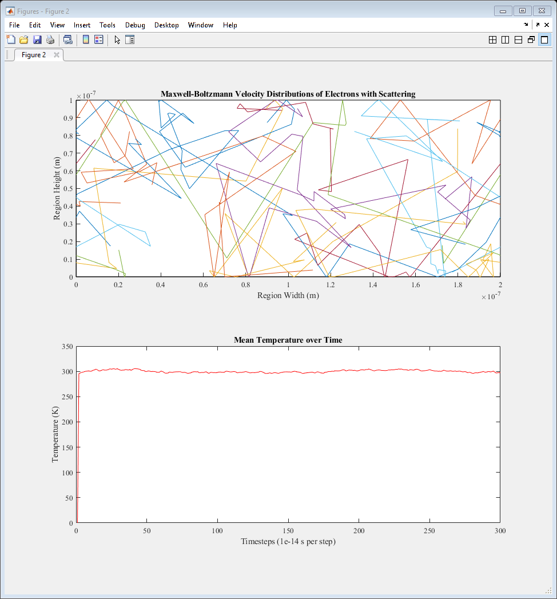
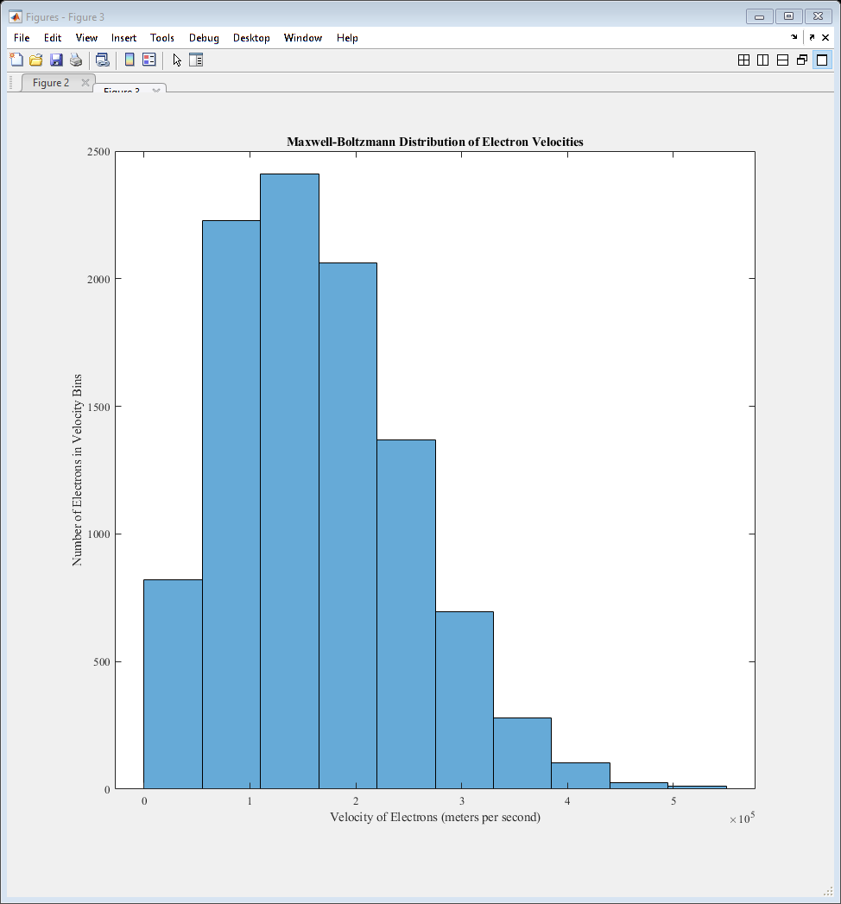
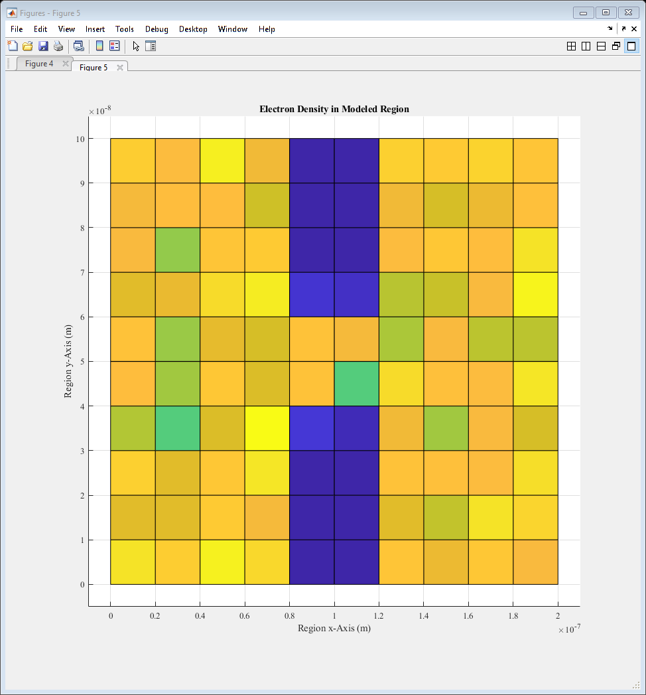
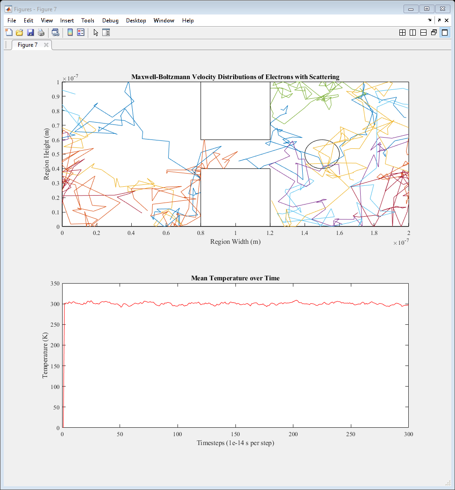

ELEC 4700 Assignment 1
Contents
Monte-Carlo Modeling of Electron Transport
Keegan Mauger 101042551
Section 1: Electron Modeling
To initialize the model, constants and a general region are created. The electrons are given an effective mass, and will act as carriers in an N-type Si semiconductor crystal. The region is to be modeled as a rectangle with dimensions of 200nm x 100nm, while the electrons have an effective mass of . Assuming the temperature of the block is 300K, the thermal velocity was calculated to be , and using this, and the given mean time between collisions of 0.2ps, the mean free path was calculated as , or 37.404nm.
A program was written to model the random motion of electrons. At the start of the program, each electron is given a random direction, with fixed velocity. The electrons reflect off of the y-axis bounds, and are transported to the opposite x-axis border should they connect with one of the two x-axis limits.
The program produces two plots. The first is a plot of the movements for a subset of electrons, showcasing the random directions and reflections. The second plot shows the mean temperature of all electrons. As the electrons were all given a fixed temperature (300K), this mean temperature also remains fixed at 300K, indicating the expected results.
% Initialization set(0,'DefaultFigureWindowStyle','docked') set(0,'defaultaxesfontsize',10) set(0,'defaultaxesfontname','Times New Roman') set(0,'DefaultLineLineWidth', 0.5); run WC global C C.q_0 = 1.60217653e-19; % electron charge C.hb = 1.054571596e-34; % Dirac constant C.h = C.hb * 2 * pi; % Planck constant C.m_0 = 9.10938215e-31; % electron mass C.kb = 1.3806504e-23; % Boltzmann constant C.eps_0 = 8.854187817e-12; % vacuum permittivity C.mu_0 = 1.2566370614e-6; % vacuum permeability C.c = 299792458; % speed of light C.g = 9.80665; % metres (32.1740 ft) per s² C.m_n = 0.26 * C.m_0; % effective electron mass C.am = 1.66053892e-27; % atomic mass unit C.T = 300; % temperature % Mean free path and thermal velocity Tmn = 0.2e-12; vth = sqrt(2*C.kb * C.T / C.m_n); MFP = vth*Tmn; figure(1) subplot(2,1,1); rectangle('Position',[0 0 200e-9 100e-9]) hold on %-------------------------------------------------------------------------- % Initializing Positions %-------------------------------------------------------------------------- N = 10000; % Number of electrons i = 0; j = 0; for i=1:N px(i) = 0 + (200e-9 - 0).*rand(1,1); py(i) = 0 + (100e-9 - 0).*rand(1,1); end % Thermal Velocity and Direction for j=1:N v0(j) = vth; % Velocity of electron theta(j) = 0 + (360 - 0).*rand(1,1); % Angle of electron if theta(j) == 360 theta(j) = 0; end vx(j) = v0(j)*cos(theta(j)); % Velocity in x axis vy(j) = v0(j)*sin(theta(j)); % Velocity in y axis end % %-------------------------------------------------------------------------- % Updating particle locations using velocity and angle %-------------------------------------------------------------------------- % Want to choose a time step so that an electron can cover 1/100th of the % region in that time % starting velocity = 1.3224e5 m/s % spacial step = 100e-9/100 = 100e-11 m % so time step will be 1.3224e14 steps/s % or 7.56e-15 s/step, approximate to 1e-14 s/step t = 0; T(1) = 0; dt = 1e-14; % time step px_prev = 0; py_prev = 0; T_prev = 0; sampleidx = randi(N,10,1); figure(1) for t=2:200 for k=1:N if px(k) == 200e-9 px(k) = 0; px_prev(k) = px(k); elseif px(k) == 0 px(k) = 200e-9; px_prev(k) = px(k); else px(k) = px(k); end px_prev(k) = px(k); px(k) = px(k) + vx(k)*dt; py_prev(k) = py(k); py(k) = py(k) + vy(k)*dt; if py(k) >= 100e-9 || py(k) <= 0 [theta(k),vx(k),vy(k)] = SpecRef(theta(k),vx(k),vy(k)); if py(k) >= 100e-9 py(k) = 100e-9; elseif py(k) <= 0 py(k) = 0; end end if px(k) > 200e-9 px(k) = 200e-9; % px_prev(k) = px(k); elseif px(k) < 0 px(k) = 0; % px_prev(k) = px(k); else px(k) = px(k); end v(k) = sqrt(vx(k)^2 + vy(k)^2); v2(k) = v(k).*v(k); end for h=1:length(sampleidx) subplot(2,1,1); plot([px_prev(sampleidx(h)) px(sampleidx(h))],[py_prev(sampleidx(h)) py(sampleidx(h))],'SeriesIndex',h) hold on end KE = 0.5 * C.m_n * mean(v2); T_prev = T; T = KE /C.kb; subplot(2,1,2); plot([t-1 t], [T_prev T],'r') hold on pause(0.001) end subplot(2,1,1); title('Random Movements of Electrons') xlabel('Region Width (m)') ylabel('Region Height (m)') subplot(2,1,2); title('Mean Temperature over Time') xlabel('Timesteps (1e-14 s per step)') ylabel('Temperature (K)') disp('Section 1') fprintf('\nThe thermal velocity is %f meters per second.',vth) fprintf('\nThe mean free path is %f nanometers.\n\n\n',MFP*1e9) pause(0.1) saveas(gcf,'Figure1')
Discussion
The results of the positional and temperature plots are expected. The positional plot has the expected reflections off the y axis, and the temperature plot is steady at 300K.
Section 1 The thermal velocity is 187019.267608 meters per second. The mean free path is 37.403854 nanometers.
Section 2: Collisions with Mean Free Path
Modifying the code of Section 1, each starting electron is given a randomized vecolcity for its x and y components using a Maxwell-Boltzmann distribution.
The average velocity was calculated to ensure the result would approximate the thermal velocity vth, and velocity distribution of all electrons were displayed in a histograph to show a proper Maxwell-Boltzmann distribution.
Additionally, the scattering of electrons through collision was modeled as a probability of scattering at each time step. Should the electron scatter, its velocity would be changed to a new value using the M-B distributions.
% Initialization clear all close all figure(2) set(0,'DefaultFigureWindowStyle','docked') set(0,'defaultaxesfontsize',10) set(0,'defaultaxesfontname','Times New Roman') set(0,'DefaultLineLineWidth', 0.5); global C C.q_0 = 1.60217653e-19; % electron charge C.hb = 1.054571596e-34; % Dirac constant C.h = C.hb * 2 * pi; % Planck constant C.m_0 = 9.10938215e-31; % electron mass C.kb = 1.3806504e-23; % Boltzmann constant C.eps_0 = 8.854187817e-12; % vacuum permittivity C.mu_0 = 1.2566370614e-6; % vacuum permeability C.c = 299792458; % speed of light C.g = 9.80665; % metres (32.1740 ft) per s² C.m_n = 0.26 * C.m_0; % effective electron mass C.am = 1.66053892e-27; % atomic mass unit C.T = 300; C.vth = sqrt(2*C.kb * C.T / C.m_n); temp = C.T; subplot(2,1,1); rectangle('Position',[0 0 200e-9 100e-9]) hold on %-------------------------------------------------------------------------- % Initializing Positions %-------------------------------------------------------------------------- N = 10000; % Number of electrons i = 0; j = 0; for i=1:N px(i) = 0 + (200e-9 - 0).*rand(1,1); py(i) = 0 + (100e-9 - 0).*rand(1,1); end %-------------------------------------------------------------------------- % Thermal Velocity and Direction %-------------------------------------------------------------------------- vth = C.vth; for j=1:N vx(j) = (vth/sqrt(2))*randn(); vy(j) = (vth/sqrt(2))*randn(); vth_calc(j) = sqrt(vx(j)^2 + vy(j)^2); end t = 0; T(1) = 0; dt = 1e-14; % time step for l=1:N %Scattering time step ndt(l) = dt; end P_scat = 0; Tmn = 0.2e-12; px_prev = 0; py_prev = 0; T_prev = 0; sampleidx = randi(N,10,1); for t=2:300 for k=1:N if px(k) == 200e-9 px(k) = 0; px_prev(k) = px(k); elseif px(k) == 0 px(k) = 200e-9; px_prev(k) = px(k); else px(k) = px(k); end P_scat(k) = 1 - exp(-(dt/Tmn)); if P_scat(k) > rand() vx(k) = (vth/sqrt(2))*randn(); vy(k) = (vth/sqrt(2))*randn(); else ndt(k) = ndt(k) + dt; end px_prev(k) = px(k); px(k) = px(k) + vx(k)*dt; py_prev(k) = py(k); py(k) = py(k) + vy(k)*dt; if py(k) >= 100e-9 || py(k) <= 0 vy(k) = -vy(k); if py(k) >= 100e-9 py(k) = 100e-9; end if py(k) <= 0 py(k) = 0; end end if px(k) > 200e-9 px(k) = 200e-9; % px_prev(k) = px(k); elseif px(k) < 0 px(k) = 0; % px_prev(k) = px(k); else px(k) = px(k); end v(k) = sqrt(vx(k)^2 + vy(k)^2); v2(k) = v(k).*v(k); end for h=1:length(sampleidx) subplot(2,1,1); plot([px_prev(sampleidx(h)) px(sampleidx(h))],[py_prev(sampleidx(h)) py(sampleidx(h))],'SeriesIndex',h) hold on end KE = 0.5 * C.m_n * mean(v2); T_prev = T; T = KE / C.kb; subplot(2,1,2); plot([t-1 t], [T_prev T],'r') hold on pause(0.01) end T_T_C = mean(ndt); MFP = mean(v)*mean(ndt); subplot(2,1,1); title('Maxwell-Boltzmann Velocity Distributions of Electrons with Scattering') xlabel('Region Width (m)') ylabel('Region Height (m)') subplot(2,1,2); title('Mean Temperature over Time') xlabel('Timesteps (1e-14 s per step)') ylabel('Temperature (K)') disp('Section 2') fprintf('\nThe given mean free time between collisions is %e seconds.',Tmn) fprintf('\nThe mean calculated time between collisions is %e seconds.',T_T_C) fprintf('\nThe mean calculated thermal velocity is %e meters per second.',mean(vth_calc)) fprintf('\nThe thermal velocity is %e meters per second.',vth) fprintf('\nThe mean free path is %e meters.\n\n\n',MFP) pause(0.1) saveas(gcf,'Figure2')
Section 2 The given mean free time between collisions is 2.000000e-13 seconds. The mean calculated time between collisions is 2.853839e-12 seconds. The mean calculated thermal velocity is 1.643419e+05 meters per second. The thermal velocity is 1.870193e+05 meters per second. The mean free path is 4.717557e-07 meters.
Discussion
From the histogram, it is seen that the electrons are distributed such that their mean velocity is approximately the thermal velocity. While there is a discrepancy, this is attributed to the inherent randomness of the model. The differences in velocity can also be attributed to the scattering of electrons and reflection off of surfaces, both of which result in a change in velocity.
Also provided is a trajectory plot of a sample of electrons, showing the differences in electron velocity, as well as scattering. A temperature plot is also present, showing how the temperture varies over time at around 300K.
The calculated mean time between collisions was found to be approximately 1.9ps, while the given value was 20ns. This calculated mean time between collisions and mean thermal velocity resulted in a mean free path of $3.11e-7$m.
Note that due to the inherant randomness of the simulation, the values discussed above will change through each run of the simulation. The actual values recorded during the simulation will be presented below.
figure(3) histogram(vth_calc,10) title('Maxwell-Boltzmann Distribution of Electron Velocities') ylabel('Number of Electrons in Velocity Bins') xlabel('Velocity of Electrons (meters per second)') saveas(gcf,'Figure3')
Section 3.1: General Enhancements
To enhance the model, rectangular blocks acting as bottlenecks were placed. These boxes would reflect impacting electrons either specularly or diffusely, depending on how the variable SPECDIFF_BOUND was set.
If the boxes specularlly reflected the electrons, upon impact their velocities were changed such that, relative to the surface normal, the outgoing angle was equal to the incoming angle. If the surfaces reflected diffusely, the electrons would be reassigned velocities on impact from a normal distribution.
Using the final positions of the electrons after the simulation was run, an electron denisty map and temperature map were formed.
% Initialization clear all close all set(0,'DefaultFigureWindowStyle','docked') set(0,'defaultaxesfontsize',10) set(0,'defaultaxesfontname','Times New Roman') set(0,'DefaultLineLineWidth', 0.5); global C SPECDIFF_BOUND = 0; % 0=Specular reflection; 1=diffuse reflection C.q_0 = 1.60217653e-19; % electron charge C.hb = 1.054571596e-34; % Dirac constant C.h = C.hb * 2 * pi; % Planck constant C.m_0 = 9.10938215e-31; % electron mass C.kb = 1.3806504e-23; % Boltzmann constant C.eps_0 = 8.854187817e-12; % vacuum permittivity C.mu_0 = 1.2566370614e-6; % vacuum permeability C.c = 299792458; % speed of light C.g = 9.80665; % metres (32.1740 ft) per s² C.m_n = 0.26 * C.m_0; % effective electron mass C.am = 1.66053892e-27; % atomic mass unit C.T = 300; C.vth = sqrt(2*C.kb * C.T / C.m_n); temp = C.T; figure(4) subplot(2,1,1); rectangle('Position',[0 0 200e-9 100e-9]) hold on rectangle('Position',[0.8e-7 0 0.4e-7 0.4e-7]) hold on rectangle('Position',[0.8e-7 0.6e-7 0.4e-7 0.4e-7]) hold on %-------------------------------------------------------------------------- % Initializing Positions %-------------------------------------------------------------------------- N = 10000; % Number of electrons i = 0; j = 0; for i=1:N px(i) = 0 + (200e-9 - 0).*rand(1,1); py(i) = 0 + (100e-9 - 0).*rand(1,1); while (0.8e-7 <= px(i) && px(i) <= 1.2e-7) && (0 <= py(i) && py(i) <= 0.4e-7) ||... (0.8e-7 <= px(i) && px(i) <= 1.2e-7) && (0.6e-7 <= py(i) && py(i) <= 1e-7) px(i) = 0 + (200e-9 - 0).*rand(1,1); py(i) = 0 + (100e-9 - 0).*rand(1,1); end end %-------------------------------------------------------------------------- % Thermal Velocity and Direction %-------------------------------------------------------------------------- vth = C.vth; for j=1:N vx(j) = (vth/sqrt(2))*randn(); vy(j) = (vth/sqrt(2))*randn(); vth_calc(j) = sqrt(vx(j)^2 + vy(j)^2); end t = 0; T(1) = 0; dt = 1e-14; % time step for l=1:N %Scattering time step ndt(l) = dt; end P_scat = 0; Tmn = 0.2e-12; px_prev = 0; py_prev = 0; T_prev = 0; sampleidx = randi(N,10,1); for t=2:300 for k=1:N if px(k) == 200e-9 px(k) = 0; px_prev(k) = px(k); elseif px(k) == 0 px(k) = 200e-9; px_prev(k) = px(k); else px(k) = px(k); end P_scat(k) = 1 - exp(-(ndt(k)/Tmn)); if P_scat(k) > rand() ndt(k) = dt; vx(k) = (vth/sqrt(2))*randn(); vy(k) = (vth/sqrt(2))*randn(); else ndt(k) = ndt(k) + dt; end px_prev(k) = px(k); px(k) = px(k) + vx(k)*dt; py_prev(k) = py(k); py(k) = py(k) + vy(k)*dt; % Reflection on top and bottom borders if py(k) >= 100e-9 || py(k) <= 0 vy(k) = -vy(k); if py(k) >= 100e-9 py(k) = 100e-9; end if py(k) <= 0 py(k) = 0; end end % Reflection on bottom of upper box % if (py(k) >= 0.6e-7) && (0.8e-7 <= px(k) && px(k) <= 1.2e-7) % if SPECDIFF_BOUND == 1 % vx(k) = (vth/sqrt(2))*randn(); % vy(k) = (vth/sqrt(2))*randn(); % else % vy(k) = -vy(k); % end % py(k) = 0.6e-7; % end if (py(k) >= 0.6e-7) && (0.8e-7 <= px(k) && px(k) <= 1.2e-7)... && ( 0.8e-7 <= px_prev(k) && px_prev(k) <= 1.2e-7) if SPECDIFF_BOUND == 1 vx(k) = (vth/sqrt(2))*randn(); vy(k) = (vth/sqrt(2))*randn(); else vy(k) = -vy(k); end py(k) = 0.601e-7; % Reflection on top of lower box % if (py(k) <= 0.4e-7) && (0.8e-7 <= px(k) && px(k) <= 1.2e-7) % if SPECDIFF_BOUND == 1 % vx(k) = (vth/sqrt(2))*randn(); % vy(k) = (vth/sqrt(2))*randn(); % else % vy(k) = -vy(k); % end % py(k) = 0.4e-7; % end elseif (py(k) <= 0.4e-7) && (0.8e-7 <= px(k) && px(k) <= 1.2e-7)... && (0.8e-7 <= px_prev(k) && px_prev(k) <= 1.2e-7) if SPECDIFF_BOUND == 1 vx(k) = (vth/sqrt(2))*randn(); vy(k) = (vth/sqrt(2))*randn(); else vy(k) = -vy(k); end py(k) = 0.399e-7; % Reflection on left of lower box % if (0 <= py(k) && py(k) <= 0.4e-7) && (0.8e-7 <= px(k) && px(k) <= 1e-7) % if SPECDIFF_BOUND == 1 % vx(k) = (vth/sqrt(2))*randn(); % vy(k) = (vth/sqrt(2))*randn(); % else % vx(k) = -vx(k); % end % px(k) = 0.8e-7; % end elseif (0 <= py(k) && py(k) <= 0.4e-7) && (0.8e-7 <= px(k) && px(k) <= 1e-7) if SPECDIFF_BOUND == 1 vx(k) = (vth/sqrt(2))*randn(); vy(k) = (vth/sqrt(2))*randn(); else vx(k) = -vx(k); end px(k) = 0.799e-7; % Reflection on right of lower box % if (0 <= py(k) && py(k) <= 0.4e-7) && (1e-7 <= px(k) && px(k) <= 1.2e-7) % if SPECDIFF_BOUND == 1 % vx(k) = (vth/sqrt(2))*randn(); % vy(k) = (vth/sqrt(2))*randn(); % else % vx(k) = -vx(k); % end % px(k) = 1.2e-7; % end elseif (0 <= py(k) && py(k) <= 0.4e-7) && (1e-7 <= px(k) && px(k) <= 1.2e-7) if SPECDIFF_BOUND == 1 vx(k) = (vth/sqrt(2))*randn(); vy(k) = (vth/sqrt(2))*randn(); else vx(k) = -vx(k); end px(k) = 1.201e-7; % Reflection on left of upper box % if (0.6e-7 <= py(k) && py(k) <= 1e-7) && (0.8e-7 <= px(k) && px(k) <= 1e-7) % if SPECDIFF_BOUND == 1 % vx(k) = (vth/sqrt(2))*randn(); % vy(k) = (vth/sqrt(2))*randn(); % else % vx(k) = -vx(k); % end % px(k) = 0.8e-7; % end elseif (0.6e-7 <= py(k) && py(k) <= 1e-7) && (0.8e-7 <= px(k) && px(k) <= 1e-7) if SPECDIFF_BOUND == 1 vx(k) = (vth/sqrt(2))*randn(); vy(k) = (vth/sqrt(2))*randn(); else vx(k) = -vx(k); end px(k) = 0.799e-7; % Reflection on right of upper box % if (0.6e-7 <= py(k) && py(k) <= 1e-7) && (1e-7 <= px(k) && px(k) <= 1.2e-7) % if SPECDIFF_BOUND == 1 % vx(k) = (vth/sqrt(2))*randn(); % vy(k) = (vth/sqrt(2))*randn(); % else % vx(k) = -vx(k); % end % px(k) = 1.2e-7; % end elseif (0.6e-7 <= py(k) && py(k) <= 1e-7) && (1e-7 <= px(k) && px(k) <= 1.2e-7) if SPECDIFF_BOUND == 1 vx(k) = (vth/sqrt(2))*randn(); vy(k) = (vth/sqrt(2))*randn(); else vx(k) = -vx(k); end px(k) = 1.201e-7; end % X-axis transition if px(k) > 200e-9 px(k) = 200e-9; % px_prev(k) = px(k); elseif px(k) < 0 px(k) = 0; % px_prev(k) = px(k); else px(k) = px(k); end v(k) = sqrt(vx(k)^2 + vy(k)^2); v2(k) = v(k).*v(k); end for h=1:length(sampleidx) subplot(2,1,1); plot([px_prev(sampleidx(h)) px(sampleidx(h))],[py_prev(sampleidx(h)) py(sampleidx(h))],'SeriesIndex',h) hold on end % Average temperature plot KE = 0.5 * C.m_n * mean(v2); T_prev = T; T = KE / C.kb; subplot(2,1,2); plot([t-1 t], [T_prev T],'r') hold on pause(0.01) end subplot(2,1,1); title('Maxwell-Boltzmann Velocity Distributions of Electrons with Scattering') xlabel('Region Width (m)') ylabel('Region Height (m)') subplot(2,1,2); title('Mean Temperature over Time') xlabel('Timesteps (1e-14 s per step)') ylabel('Temperature (K)') saveas(gcf,'Figure4') %-------------------------------------------------------------------------- % Position and temperature maps %--------------------------------------------------------------------------

Discussion
From the trajectory plot, it was seen that electrons are roughly equavalent in concentration for all regions outside of the bottleneck interior.
This result is shown on the density map, where it can be seen that the density of electons is minimal inside the boxes, therefore concluding that the reflection was properly modeled.
The temperature map shows that temperature tends to be lowest on the interior of the boxes, due to the lack of electrons.
E_map = [reshape(px,[N,1]),reshape(py,[N,1])]; figure(5) hist3(E_map,'CDataMode','auto','FaceColor','interp') view(2) title('Electron Density in Modeled Region') xlabel('Region x-Axis (m)') ylabel('Region y-Axis (m)') zlabel('Electron Density') saveas(gcf,'Figure5')
Temperature Map
Nbins = 21; d = 1; u = 1; vtm = 0; vbm = 0; vbm2 = 0; T_map = zeros(Nbins); [X,Xe] = discretize(px,Nbins); [Y,Ye] = discretize(py,Nbins); for e=1:Nbins for f=1:Nbins for g=1:N if X(g) == e && Y(g) == f vtm(d) = v(g); vtm2(d) = vtm(d).*vtm(d); d = d+1; end end vbm2 = mean(vtm2); d = 1; T_map(e,f) = (0.5*C.m_n*vbm2)/C.kb; end end [V,W] = meshgrid(0:1e-8:2e-7,0:0.5e-8:1e-7); figure(6) surf(V,W,T_map,'FaceColor','interp') view(2) title('Temperature Map of Modeled Region') xlabel('Region x-Axis (m)') ylabel('Region y-Axis (m)') zlabel('Temperature (K)') saveas(gcf,'Figure6')
Section 3.2: Special Enhancements
The goal of the special enhancement to the model was to create a circle that would reflect inpacting electrons in a specular method at its borders. While the method was unsuccessful, the formula is correct and will be described below.
At the point of collision with the circle, the impacting electron allows the use of three sets of data: the coordinates of the origin of the circle, the coordinates of the impacting electron against the circle's boundaries, and the line formed between the two points, which is the radius of the circle.
The function "impact3PointFinder" is able to find the third missing point which, when known, would form a right angle triangle between the origin, the impact position, and the unknown point, through the use of symbolic functions, substitution, the distance equation, and the knowledge that the product of two lines perpendicular to each other is -1. With the three points forming a right triangle, the angle between the impact velocity vector and the normal could be found, and then used to calculate the reflection vector.
Unfortunately, for unknown reasons, the function to find the unknown point only works for certain values. For example, the function running with the arguments impact3PointFinder(3, 8, 10, 2, sqrt(85)) successfully returns a point at 6.5,9.6098, however, when used in the modeling program, an error in sym/subs>normalize was returned, stating: "Inconsistency between sizes of second and third arguments". It is unknown why this occurs, but if a solution were known, the program would be simple to complete.
The function is present in the code folder attached to this assignment, if the reader was interested in the result. However, since the function fails to operate properly within the confines of the model, the special enhancement planned was unable to be completed.
clear all close all % Initialization set(0,'DefaultFigureWindowStyle','docked') set(0,'defaultaxesfontsize',10) set(0,'defaultaxesfontname','Times New Roman') set(0,'DefaultLineLineWidth', 0.5); global C figure(7) SPECDIFF_BOUND = 0; % 0=Specular reflection; 1=diffuse reflection C.q_0 = 1.60217653e-19; % electron charge C.hb = 1.054571596e-34; % Dirac constant C.h = C.hb * 2 * pi; % Planck constant C.m_0 = 9.10938215e-31; % electron mass C.kb = 1.3806504e-23; % Boltzmann constant C.eps_0 = 8.854187817e-12; % vacuum permittivity C.mu_0 = 1.2566370614e-6; % vacuum permeability C.c = 299792458; % speed of light C.g = 9.80665; % metres (32.1740 ft) per s² C.m_n = 0.26 * C.m_0; % effective electron mass C.am = 1.66053892e-27; % atomic mass unit C.T = 300; C.vth = sqrt(2*C.kb * C.T / C.m_n); temp = C.T; subplot(2,1,1); rectangle('Position',[0 0 200e-9 100e-9]) hold on rectangle('Position',[0.8e-7 0 0.4e-7 0.4e-7]) hold on rectangle('Position',[0.8e-7 0.6e-7 0.4e-7 0.4e-7]) hold on rectangle('Position',[1.4e-7 0.4e-7 0.2e-7 0.2e-7],'Curvature',[1 1]) hold on radius = 0.1e-7; originx = 1.5e-7; originy = 0.5e-7; %-------------------------------------------------------------------------- % Initializing Positions %-------------------------------------------------------------------------- N = 10000; % Number of electrons i = 0; j = 0; for i=1:N px(i) = 0 + (200e-9 - 0).*rand(1,1); py(i) = 0 + (100e-9 - 0).*rand(1,1); while (0.8e-7 <= px(i) && px(i) <= 1.2e-7) && (0 <= py(i) && py(i) <= 0.4e-7) ||... (0.8e-7 <= px(i) && px(i) <= 1.2e-7) && (0.6e-7 <= py(i) && py(i) <= 1e-7) px(i) = 0 + (200e-9 - 0).*rand(1,1); py(i) = 0 + (100e-9 - 0).*rand(1,1); end %subplot(2,1,1); %plot(px(i),py(i),'b.') %hold on end %-------------------------------------------------------------------------- % Thermal Velocity and Direction %-------------------------------------------------------------------------- vth = C.vth; for j=1:N % v0(j) = MaxBoltzDis(); % Velocity of electron % theta(j) = 0 + (360 - 0).*rand(1,1); % Angle of electron % if theta(j) == 360 % theta(j) = 0; % end % vx(j) = v0(j)*cos(theta(j)); vx(j) = (vth/sqrt(2))*randn(); % Velocity in x axis vy(j) = (vth/sqrt(2))*randn(); vth_calc(j) = sqrt(vx(j)^2 + vy(j)^2); %vy(j) = v0(j)*sin(theta(j)); % Velocity in y axis end t = 0; T(1) = 0; dt = 1e-14; % time step for l=1:N %Scattering time step ndt(l) = dt; end P_scat = 0; Tmn = 0.2e-12; px_prev = 0; py_prev = 0; T_prev = 0; sampleidx = randi(N,10,1); for t=2:300 for k=1:N if px(k) == 200e-9 px(k) = 0; px_prev(k) = px(k); elseif px(k) == 0 px(k) = 200e-9; px_prev(k) = px(k); else px(k) = px(k); end P_scat(k) = 1 - exp(-(ndt(k)/Tmn)); %r = 0.8 + (1 - 0.8).*rand(1,1); if P_scat(k) > rand() ndt(k) = dt; vx(k) = (vth/sqrt(2))*randn(); vy(k) = (vth/sqrt(2))*randn(); else ndt(k) = ndt(k) + dt; end px_prev(k) = px(k); px(k) = px(k) + vx(k)*dt; py_prev(k) = py(k); py(k) = py(k) + vy(k)*dt; % Reflection on top and bottom borders if py(k) >= 100e-9 || py(k) <= 0 %[theta(k),vx(k),vy(k)] = SpecRef(theta(k),vx(k),vy(k)); vy(k) = -vy(k); if py(k) >= 100e-9 py(k) = 100e-9; end if py(k) <= 0 py(k) = 0; end end % Reflection on circle if abs(originx - px(k)) <= radius && abs(originy - py(k)) <= radius %PB = impact3PointFinder(px(k),py(k),originx,originy,radius); end % Reflection on bottom of upper box % if (py(k) >= 0.6e-7) && (0.8e-7 <= px(k) && px(k) <= 1.2e-7) % if SPECDIFF_BOUND == 1 % vx(k) = (vth/sqrt(2))*randn(); % vy(k) = (vth/sqrt(2))*randn(); % else % vy(k) = -vy(k); % end % py(k) = 0.6e-7; % end if (py(k) >= 0.6e-7) && (0.8e-7 <= px(k) && px(k) <= 1.2e-7)... && ( 0.8e-7 <= px_prev(k) && px_prev(k) <= 1.2e-7) if SPECDIFF_BOUND == 1 vx(k) = (vth/sqrt(2))*randn(); vy(k) = (vth/sqrt(2))*randn(); else vy(k) = -vy(k); end py(k) = 0.601e-7; % Reflection on top of lower box % if (py(k) <= 0.4e-7) && (0.8e-7 <= px(k) && px(k) <= 1.2e-7) % if SPECDIFF_BOUND == 1 % vx(k) = (vth/sqrt(2))*randn(); % vy(k) = (vth/sqrt(2))*randn(); % else % vy(k) = -vy(k); % end % py(k) = 0.4e-7; % end elseif (py(k) <= 0.4e-7) && (0.8e-7 <= px(k) && px(k) <= 1.2e-7)... && (0.8e-7 <= px_prev(k) && px_prev(k) <= 1.2e-7) if SPECDIFF_BOUND == 1 vx(k) = (vth/sqrt(2))*randn(); vy(k) = (vth/sqrt(2))*randn(); else vy(k) = -vy(k); end py(k) = 0.399e-7; % Reflection on left of lower box % if (0 <= py(k) && py(k) <= 0.4e-7) && (0.8e-7 <= px(k) && px(k) <= 1e-7) % if SPECDIFF_BOUND == 1 % vx(k) = (vth/sqrt(2))*randn(); % vy(k) = (vth/sqrt(2))*randn(); % else % vx(k) = -vx(k); % end % px(k) = 0.8e-7; % end elseif (0 <= py(k) && py(k) <= 0.4e-7) && (0.8e-7 <= px(k) && px(k) <= 1e-7) if SPECDIFF_BOUND == 1 vx(k) = (vth/sqrt(2))*randn(); vy(k) = (vth/sqrt(2))*randn(); else vx(k) = -vx(k); end px(k) = 0.799e-7; % Reflection on right of lower box % if (0 <= py(k) && py(k) <= 0.4e-7) && (1e-7 <= px(k) && px(k) <= 1.2e-7) % if SPECDIFF_BOUND == 1 % vx(k) = (vth/sqrt(2))*randn(); % vy(k) = (vth/sqrt(2))*randn(); % else % vx(k) = -vx(k); % end % px(k) = 1.2e-7; % end elseif (0 <= py(k) && py(k) <= 0.4e-7) && (1e-7 <= px(k) && px(k) <= 1.2e-7) if SPECDIFF_BOUND == 1 vx(k) = (vth/sqrt(2))*randn(); vy(k) = (vth/sqrt(2))*randn(); else vx(k) = -vx(k); end px(k) = 1.201e-7; % Reflection on left of upper box % if (0.6e-7 <= py(k) && py(k) <= 1e-7) && (0.8e-7 <= px(k) && px(k) <= 1e-7) % if SPECDIFF_BOUND == 1 % vx(k) = (vth/sqrt(2))*randn(); % vy(k) = (vth/sqrt(2))*randn(); % else % vx(k) = -vx(k); % end % px(k) = 0.8e-7; % end elseif (0.6e-7 <= py(k) && py(k) <= 1e-7) && (0.8e-7 <= px(k) && px(k) <= 1e-7) if SPECDIFF_BOUND == 1 vx(k) = (vth/sqrt(2))*randn(); vy(k) = (vth/sqrt(2))*randn(); else vx(k) = -vx(k); end px(k) = 0.799e-7; % Reflection on right of upper box % if (0.6e-7 <= py(k) && py(k) <= 1e-7) && (1e-7 <= px(k) && px(k) <= 1.2e-7) % if SPECDIFF_BOUND == 1 % vx(k) = (vth/sqrt(2))*randn(); % vy(k) = (vth/sqrt(2))*randn(); % else % vx(k) = -vx(k); % end % px(k) = 1.2e-7; % end elseif (0.6e-7 <= py(k) && py(k) <= 1e-7) && (1e-7 <= px(k) && px(k) <= 1.2e-7) if SPECDIFF_BOUND == 1 vx(k) = (vth/sqrt(2))*randn(); vy(k) = (vth/sqrt(2))*randn(); else vx(k) = -vx(k); end px(k) = 1.201e-7; end % X-axis transition if px(k) > 200e-9 px(k) = 200e-9; % px_prev(k) = px(k); elseif px(k) < 0 px(k) = 0; % px_prev(k) = px(k); else px(k) = px(k); end v(k) = sqrt(vx(k)^2 + vy(k)^2); v2(k) = v(k).*v(k); end for h=1:length(sampleidx) subplot(2,1,1); plot([px_prev(sampleidx(h)) px(sampleidx(h))],[py_prev(sampleidx(h)) py(sampleidx(h))],'SeriesIndex',h) hold on end % Average temperature plot KE = 0.5 * C.m_n * mean(v2); T_prev = T; T = KE / C.kb; %T_map(t) = T; subplot(2,1,2); %plot(t, T, 'b.') plot([t-1 t], [T_prev T],'r') hold on pause(0.01) end subplot(2,1,1); title('Maxwell-Boltzmann Velocity Distributions of Electrons with Scattering') xlabel('Region Width (m)') ylabel('Region Height (m)') subplot(2,1,2); title('Mean Temperature over Time') xlabel('Timesteps (1e-14 s per step)') ylabel('Temperature (K)') saveas(gcf,'Figure7')